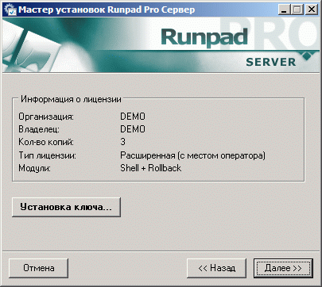
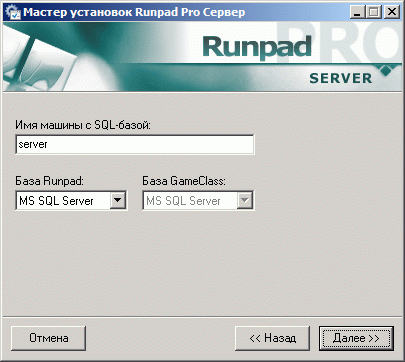

| Шаг 3. Установка сервера Runpad Pro |
Сервер Runpad Pro представляет собой системный сервис Windows, к которому подключаются все клиентские машины и операторы.
Сервер обычно устанавливается на отдельную машину, однако при необходимости его можно установить и на машину оператора.
В принципе, возможна работа с несколькими серверами в одной организации, однако в большинстве случаев достаточно одного.
Установка запустится только из-под учетной записи администратора компьютера!
После установки запустится программа настроек сервера.
На первой ее странице предлагается установить (переустановить) лицензионный ключ.
Кол-во копий в ключе означает кол-во одновременных клиентских подключений к серверу (т.е. кол-во компьютеров или пользователей).
Тип лицензии в данной версии может быть только "Расширенная".
Модули позывает, какие модули могут работать с данной лицензией:
- Только Shell (без Rollback) - на клиентских машинах может быть установлен и запущен Shell (шелл-оболочка), но не может быть активирован модуль отката файловой системы Rollback;
- Только Rollback (без Shell) - на клиентских машинах может быть запущен модуль отката файловой системы Rollback, но не может быть запущен Shell (шелл-оболочка);
- Shell + Rollback - могут быть запущены оба модуля.

Далее необходимо указать параметры соединения с SQL-сервером.
При этом есть возможность интеграции с базой GameClass. Если вы не используете GameClass, то опцию можно игнорировать.

После установок сервер полностью готов к работе и запущен.
Программу установок сервера можно запустить в любой момент для изменения настроек.
Примечание: сервер использует TCP-порт 13228
Внимание! Если у вас установлена программа Astalavista2, то возможно потребуется увеличить макс. число разрешенных подключений к серверной машине.
В файле C:\WINDOWS\my.ini нужно увеличить число в параметре max_connections (более подробно см. документацию по этой программе).